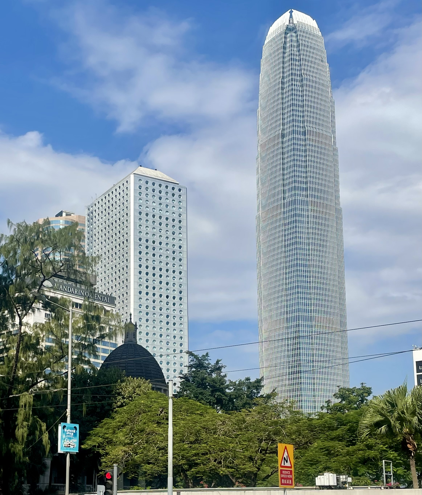

01
The city
Hong Kong's skyline is part of what makes the place so addictive. Modern towers, older buildings, harbour views and busy streets all seem to compete for space.
Even after spending a lot of time here, there is always another street, view or building that catches your eye.

02
Beyond the towers
One of the things we love most about Hong Kong is how quickly the city disappears. Head into the hills and suddenly you're surrounded by greenery, sea and open space.
Dragon's Back is a favourite for exactly this reason — one of the best ways to see a completely different side of Hong Kong.